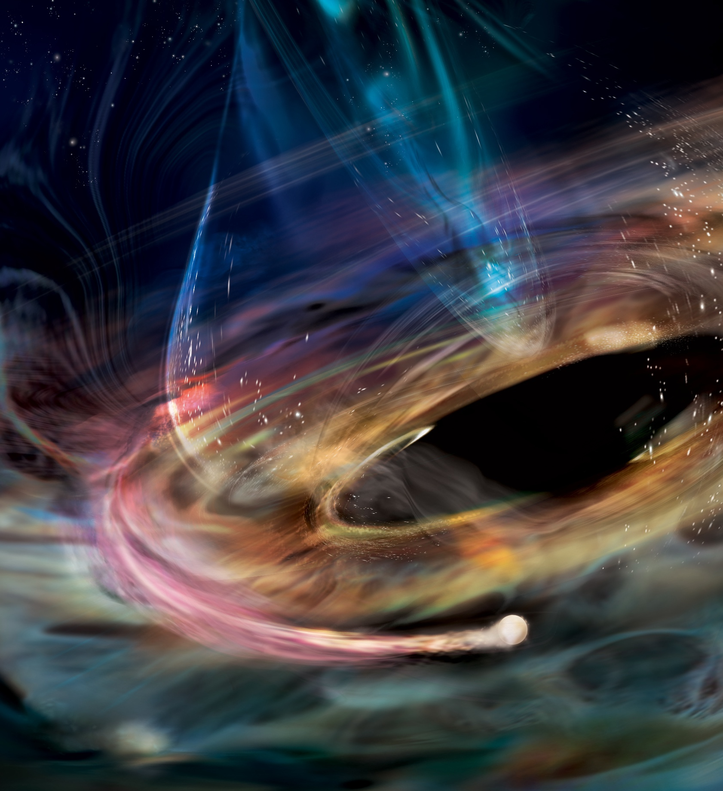

In The News
My research on black holes and astrophysics has been featured in several media outlets. Here are some highlights:
I discovered the first rapidly variable X-ray oscillations from a supermassive black hole. This result was published in Nature, featured in an press conference at AAS 245 (watch here!), and highlighted in many news articles, including:
The image on the right was art made for this work by NASA/Aurore Simonnet (Sonoma State Univeristy). It depicts the potential white dwarf companion to this peculiar supermassive black hole, as well as the newly launched jet.

JWST Reveals Star-Shredding Black Holes
The work I led on JWST observations of tidal disruption events was featured several news articles:
I also discussed these results on the CBS Eyes on the World Podcast, which you can listen to here.